Ubuntu安装基础教程
作者：TeliuTe 来源：基础教程网
三十二、添加 Grub2 UEFI启动项 返回目录 下一课UEFI 可以识别FAT32分区中的efi文件，我们可以在BIOS中添加一个自己的启动项，操作中注意细心，下面来看一个练习；
1、准备efi文件
1）正常启动计算机，或用U盘、Live cd 启动计算机，将64位 Ubuntu iso 镜像文件中的EFI文件夹解压到一个FAT32分区根目录下面；
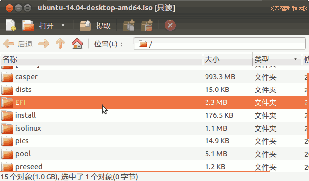
2）打开分区，打开EFI/BOOT文件夹，将里面的BOOTx64.efi删除，留下grubx64.efi文件；
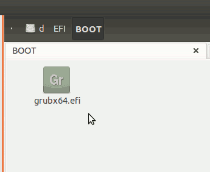
3）重新启动计算机，按Del或F2或F12进入BIOS设置的boot启动项或startup项；
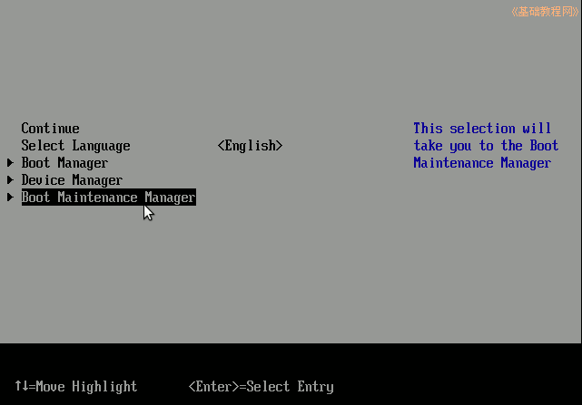
4）点击 Boot Maintenance Manager 菜单项，进入启动管理；
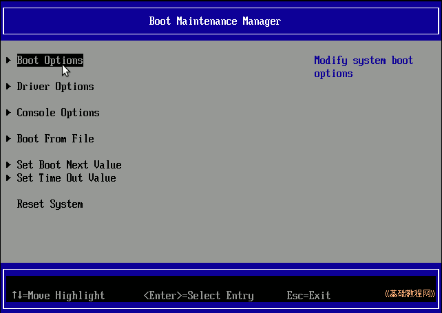
5）点 Boot Option 进入启动选项窗口，找到 Add Boot Option 添加启动项，点击进入；
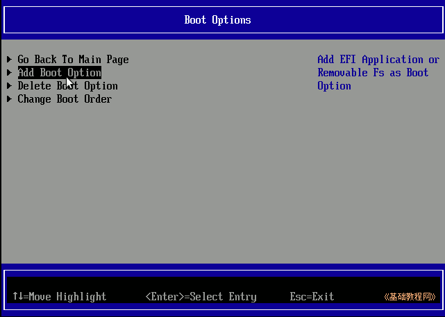
6）选中grubx64.efi所在的分区，按回车键继续，可以根据分区号来查找；
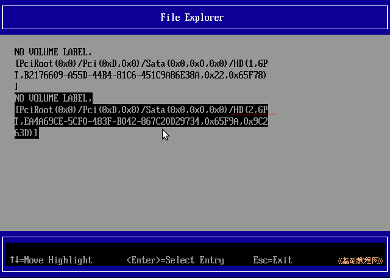
7）依次点击EFI/BOOT打开文件夹，找到 grubx64.efi；
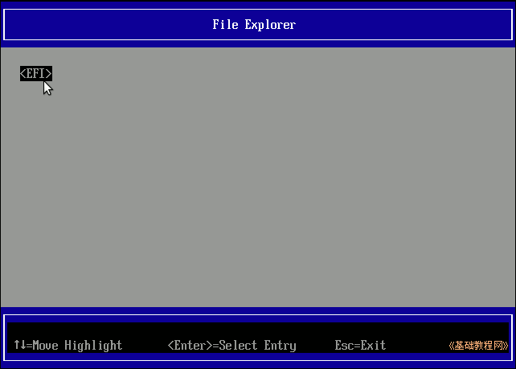
8）按方向键进入 Input the description ，按回车键输入菜单文本 EFI File GRUB2 ；
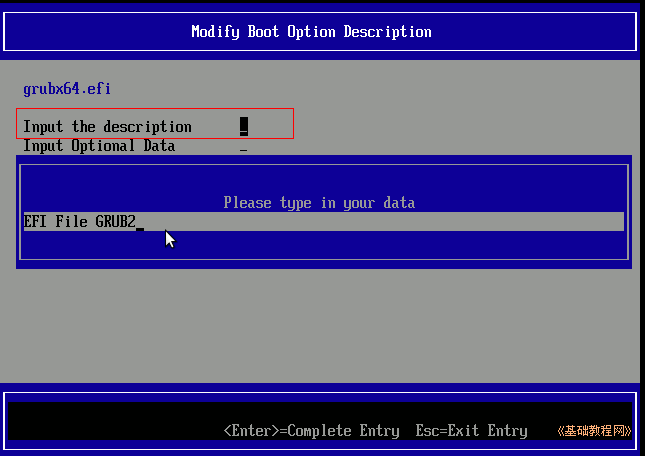
9）按回车确认后，再把光标移到下面的 Commit Chanages and Exit，按回车保存退出；
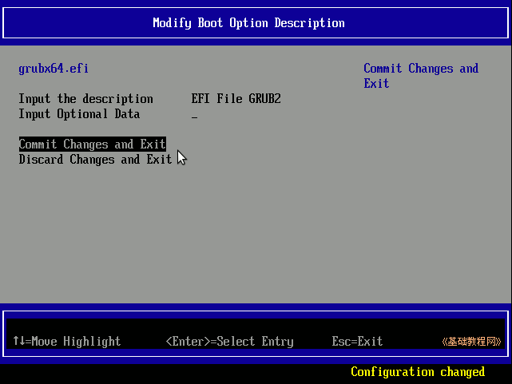
2、启动顺序
1）按Esc键返回到首页，进入 Boot Manager 里就可以看到多了一项 EFI File GRUB2 的启动项，按回车即可启动；
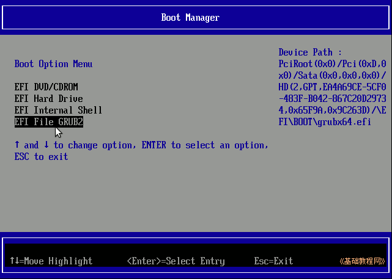
2）稍等就会启动到GRUB2的界面，出现grub提示符，可以输入grub2的命令了；
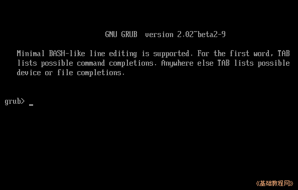
3）如果想把它设为第一项启动，在Boot Option窗口，选择 Chanage Boot Order；
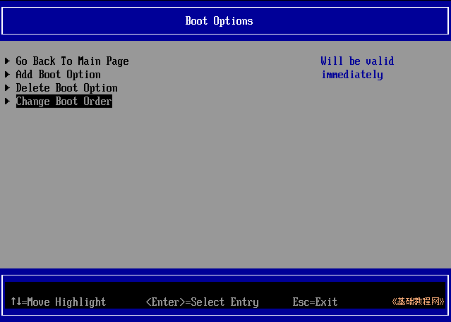
4）进入排序界面后，按回车键调出蓝色排序框，再按减号键，将其他启动项排到下边，让 EFI grub2 启动项排到最上面，按回车确认；
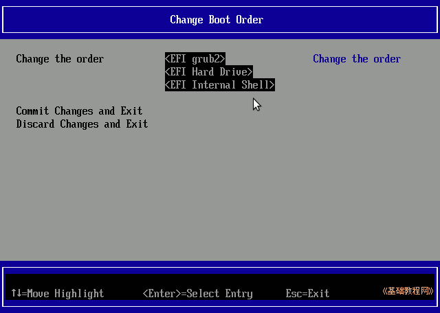
本节学习了添加 UEFI 启动项的基本方法，如果你成功地完成了练习，请继续学习下一课内容；
本教程由86团学校TeliuTe制作|著作权所有
基础教程网：http://teliute.org/
美丽的校园……
转载和引用本站内容，请保留作者和本站链接。